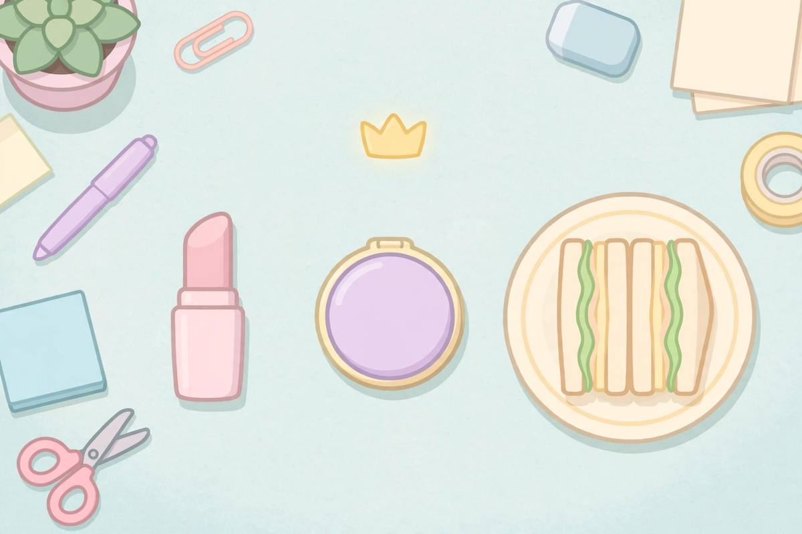

Very Demure, Very Mindful, Very Exhausted: One Phrase Ate August

How long does it take a joke to be crowned by a dictionary? In 2024 the measured answer was about four months, door to door. A creator films a quiet, satirical bit about how she does her makeup for work. The internet spends two weeks applying her caption to sandwiches, it cannot be stressed enough, sandwiches, and by late November a dictionary has weighed the evidence, counted a 1,200 percent surge in usage, and named the joke’s key word its Word of the Year. This article is a field guide to that journey, written at a respectful volume.
See how it opens with a question and then answers it immediately? Very restrained. Very unwilling to make you scroll for the punchline. The phrase would approve, which is fitting, because the phrase approved of everything by the end. That was the problem, and the comedy.
The facts box: two posts to a crown
The chronology, as documented by Know Your Meme, is admirably compact. On August 2, 2024, TikToker Jools Lebron, posting as @joolieannie, uploaded a video saying, “See how I come to work? Very demure,” under the overlay “How to be demure at work.” It gathered over 2 million plays and 360,000 likes in 10 days. On August 6, the follow up landed: “You see how I do my makeup for work? Very demure, very mindful. I don’t come to work with a green cut-crease.” That one gathered over 7 million plays and 800,000 likes in a week.
Dictionary.com’s own numbers describe what happened next. Usage of demure in digital media surged 1,200 percent between January and August 2024, a rise the dictionary attributes largely to Lebron’s videos about professional, travel and social settings. Google searches for the term surged 14 fold by August. At the peak, searches for demure on Dictionary.com itself were 200 times their previous rate, and the word stayed five times more popular than it had been before the breakout. On November 25, 2024, Dictionary.com named demure its Word of the Year, noting that a word traditionally used for reserved or modest individuals had taken on an expanded meaning: refined and sophisticated appearances or behaviours.
A reserved word, promoted for being everywhere. The dictionary was in on the joke, which is more than can be said for everyone who quoted it that month.
The application guide: where the phrase went to work
Think of this section as a viewing order for the trend, because the spread followed a sequence so tidy it deserves episode titles. Episode one is the lip dub era. Within days, other TikTokers were sharing what they counted as demure, mindful and cutesy traits while lip dubbing the original audio, quoting it, or laying it over their own posts as a voice over. The format required no writing at all. The audio was the script, the caption was the costume, and any ordinary act could be cast in the lead role.
Episode two is the props department. By August 11, a video demonstrating the demure fashion in which to eat a sandwich had gathered over 2.5 million plays. A sandwich. The phrase had begun, in August, as commentary on workplace presentation, and within nine days it was seasoning lunch. This is the moment a trend stops describing a thing and starts licensing a tone. Anything filmed quietly enough could be certified demure, and the certification was the content.
Episode three is the remix and the migration. An August 12 remix set the catchphrase to music, and by mid August the phrase had spread beyond TikTok to Reddit and X, where one user’s complaint about seeing the word demure dozens of times in a single day gathered tens of thousands of likes. Even the exhaustion was engagement. The phrase had reached the stage every August trend dreams of, being complained about at scale, in its own vocabulary, by people who claimed to be done with it.
Joke versus rule: the comparison table
| Feature | The joke, as posted | The rule, as misread |
|---|---|---|
| Setting | Work makeup, travel and social moments, played for laughs | Any office, treated as policy |
| Tone | Hushed, satirical, self aware | Hushed, sincere, faintly supervisory |
| Enforcement | Likes and lip dubs | Imagined, but quoted as if real |
| Green cut-crease | The punchline example of what not to do | A dress code violation that exists nowhere |
| Authority | One creator’s delivery | A dictionary crown, applied retroactively |
The table matters because the misreading was the trend’s second act. Dictionary.com is explicit about what its crown measured: usage, searches and a shift in meaning toward refined presentation. It did not publish an etiquette code, certify a workplace standard, or appoint anyone head of demure compliance. The phrase was a satirical caption with excellent posture. Treating it as a rulebook is like treating a weather vane as a meteorologist. It points. It does not know anything.
The afterlife: pile on, paperwork, crown
Every successful phrase gets an afterlife, and this one collected the full set at speed. First came the wider fame: Lebron attracted further coverage after appearing on Jimmy Kimmel Live!, the late night stop that certifies a trend has left the app and entered the general population’s small talk.
Then came the paperwork, the least demure chapter of all. Unrelated parties tried to trademark phrases related to the catchphrase, and TMZ reported that a man from Washington filed to trademark Lebron’s catchphrase with the intention of using it for marketing, promotion and advertising. Consider the restraint required here. A phrase celebrating modesty and mindfulness became, within weeks, an asset strangers attempted to register for advertising. Nothing about that sentence is mindful. All of it is extremely 2024.
Then the crown, on November 25, and one final honour that proves the story ends kindly. The Webby Awards gave Lebron its 2025 Webby Crush the Internet Award, describing a single satirical TikTok turned into an iconic internet moment, and Lebron’s five word acceptance speech was, in full: “Very Demure. Very Successful. Periodt!” The creator got the last caption. The trademark hopefuls got a lesson in timing. The dictionary got its word. Everyone, for once, was assigned the correct role.
The caption test: a decision framework
The phrase is retired now, mostly, but its pattern is permanent, so the test is built for the next hushed caption that eats a month. Three questions, applied before quoting, posting or, heaven forbid, enforcing.
- The delivery question. Was the original said as satire? Lebron’s videos were a performance with a wink, documented as such from the first week. If the source is joking, the quote is a joke, no matter how many accounts repeat it with a straight face.
- The authority question. Who, exactly, made this a rule? A dictionary crowning a word is measuring language, not issuing instructions. If no employer, venue or actual rulebook appears in the answer, there is no rule, only a caption with confidence.
- The sandwich question. Has the phrase already been applied to lunch? Once a term of workplace presentation is certifying sandwiches at 2.5 million plays, it has completed its journey from observation to seasoning. Seasoning is wonderful. It is not guidance.
Why no fix procedure here? There is nothing to repair. A catchphrase is not a setting, and August 2024 cannot be rolled back to a previous version. The framework above is the practical tool: a way to enjoy the next viral caption as a caption, which is the most demure outcome available.
FAQ
Who started the demure trend? TikTok creator Jools Lebron, posting as @joolieannie, whose August 2 and August 6, 2024 videos about being demure at work popularised the phrase very demure, very mindful.
Was demure really a word of the year? Yes. Dictionary.com named demure its 2024 Word of the Year on November 25, 2024, after usage in digital media surged 1,200 percent between January and August that year.
Is very demure, very mindful an actual workplace rule? No. It began as a satirical caption about presentation at work, travel and social settings. The dictionary crown measured how much the word was used, not how anyone is required to behave.
So how should the phrase be filed now? As a perfect August artifact: a joke so well delivered that brands, trademark filings and a dictionary all queued up to hold it, and a creator who, when handed an award the following year, reviewed the whole saga in five words and sat back down. Very demure. Very complete.
— Rex Bennett, Entertainment Writer